原文由 风炎 发表于 2008-5-28 11:50:06 :
是我这里网有问题吗？图片一张都没看到

[安徽消息]
“以棋会友”是中国自古有之的风雅传统，5月25日，九溪江南会所内高手云集，来自全省各地的职业五子棋选手和安徽职业连珠社的棋手们，为争夺代表安徽参加全国五子棋团体赛的宝贵名额，在这里展开了一场精彩而激烈的棋艺大比拼。
据安徽省联珠社相关负责人，安徽体育运动学校苗老师介绍，此次比赛共有33名高手参赛，为七轮循环赛，采用的是中国棋院最新审定的赛制规则，也是国际上通用的RIF规则，即三手交换、五手两打、执黑禁手的规则。
由于报名人数过多，原定下午一点的比赛于上午九点提前开始，在九溪江南会所二楼精心准备的赛场内，选手们陆续落座，相关人员宣布比赛开始后，一场无声的较量迅速展开了。
随着比赛轮数的增加，“战争”也渐渐进入了“白热化”，赛场内安静无比，选手们个个脸上都是一副沉思的表情，手中的棋子也是迟迟不肯落下。在每轮比赛结束的休息间隙，还可以看到不少选手三三两两聚在一起，意犹未尽地议论着刚才的比赛，或是围拢在棋盘边，认真
思考和比划着下一轮的“战术”。也有不少选手趁着休息时间走到门外，饶有兴致地观赏着九溪江南院内的溪水、小桥、垂柳、鲜花和精美的建筑所共同构成的美丽景致。
“这里的环境很幽雅，会所内的设置也颇带几分古韵，感觉很适合下棋的氛围。”当问及为什么要选择九溪江南作为比赛场地时，比赛组织者之一，安徽省联珠社的李老师笑着告诉记者，一方面是因为环境和场地比较适合，另一方面是因为很赞同九溪江南开发商对于房产开发的理念，即不仅仅要做地产，而且要将各种优秀的文化融入到地产开发中，让房产拥有更加深厚的文化底蕴。像之前举办的九溪业主大讲堂、全公益支持人文关怀新闻摄影展、以及此次免费为职业五子棋全国团体赛安徽赛区选拔赛提供场地，这些都体现了开发商对于公益事业的热心和对于优秀文化的追求。
“这里的景色很漂亮，会所的设置也很幽静别致，在这里比赛感觉更放松，休息的场所也很舒适。”一些参赛选手也纷纷表示，他们很喜欢这里的比赛环境。
据悉，此次比赛将在七轮循环赛结束后，选拔出三名正式选手和两名替补选手，奔赴2008年6月7-9日在石家庄举办的2008诺亚人力资源杯全国五子棋团体赛现场，进行最终的 “巅峰对决”。
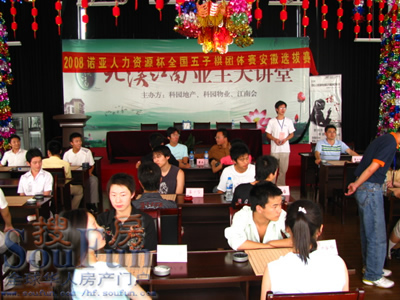
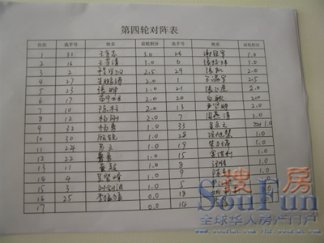
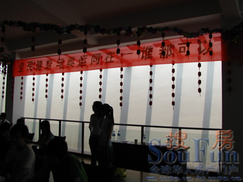
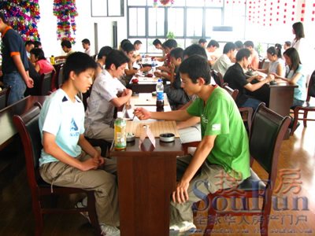
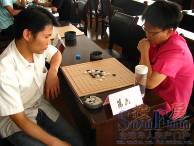
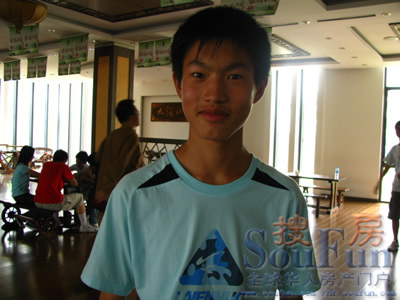
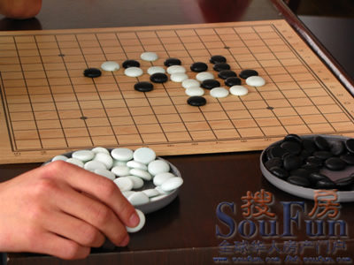
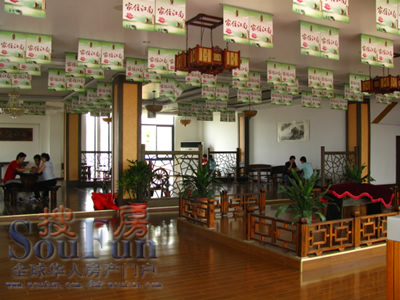
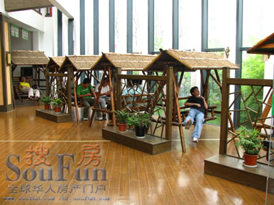
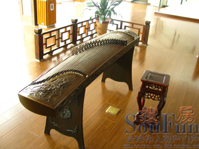
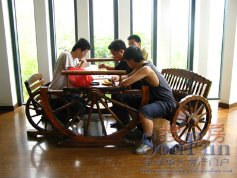
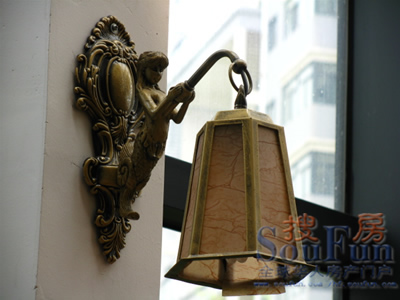
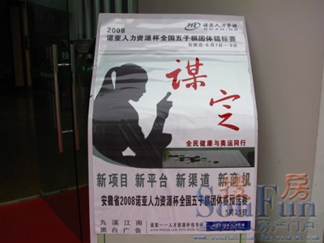
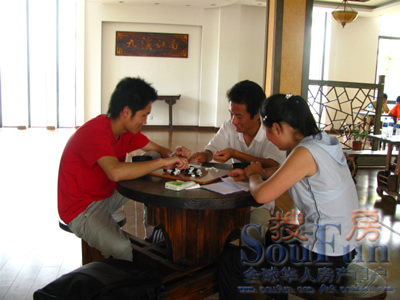
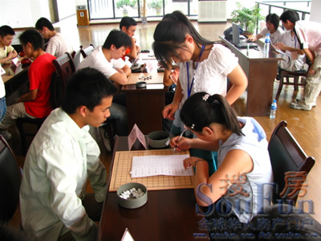
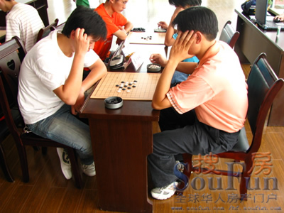
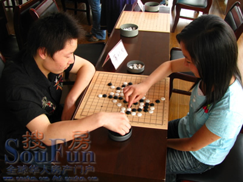
&nbs
引用：应该是图片不允许外链，已经修复。
原文由 风炎 发表于 2008-5-28 11:50:06 :
是我这里网有问题吗？图片一张都没看到
 看得到了
看得到了神往